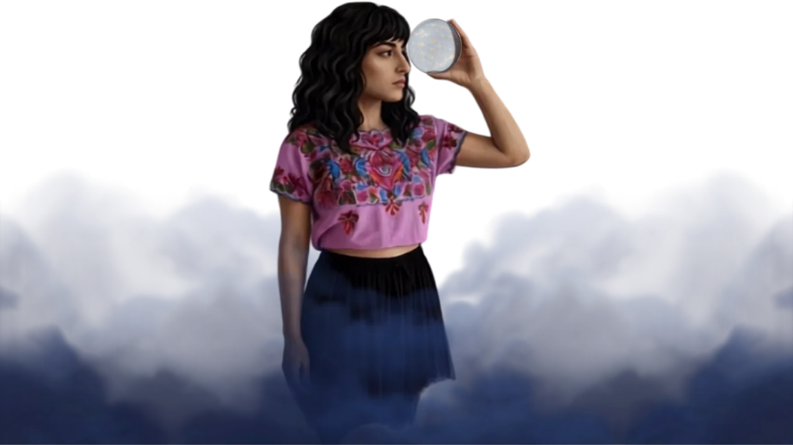
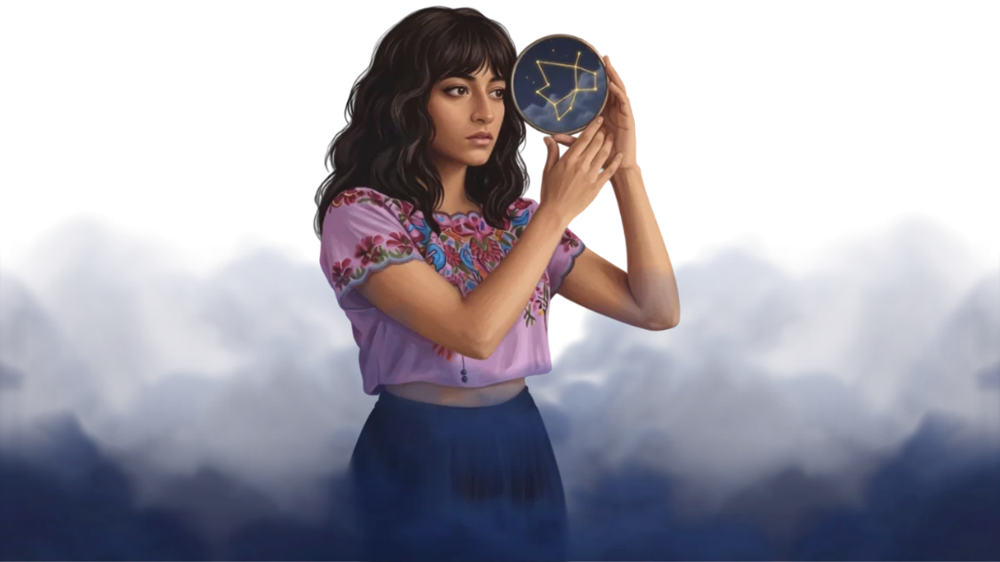
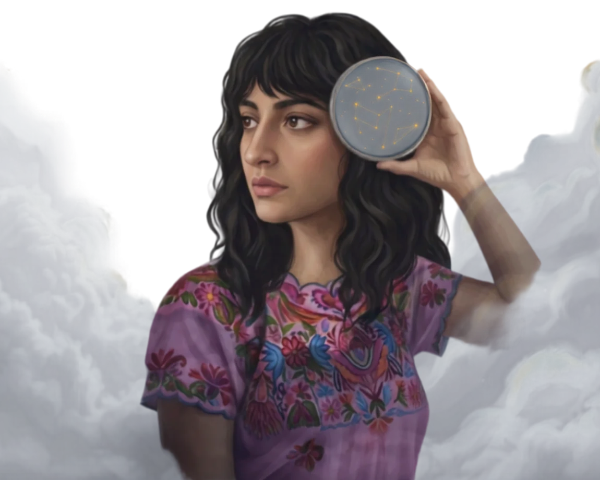
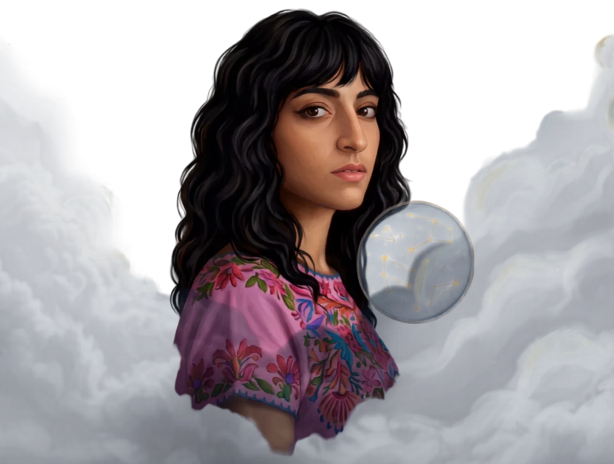
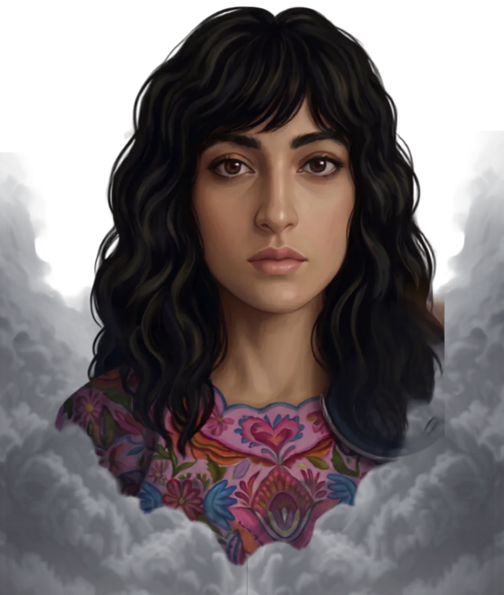
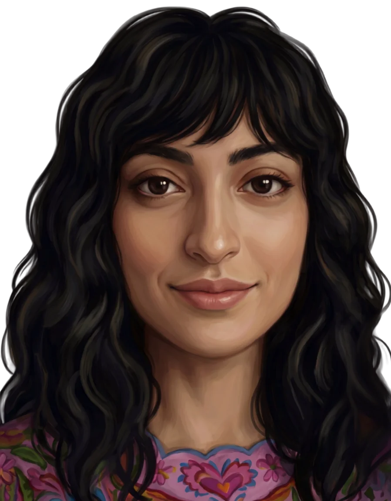
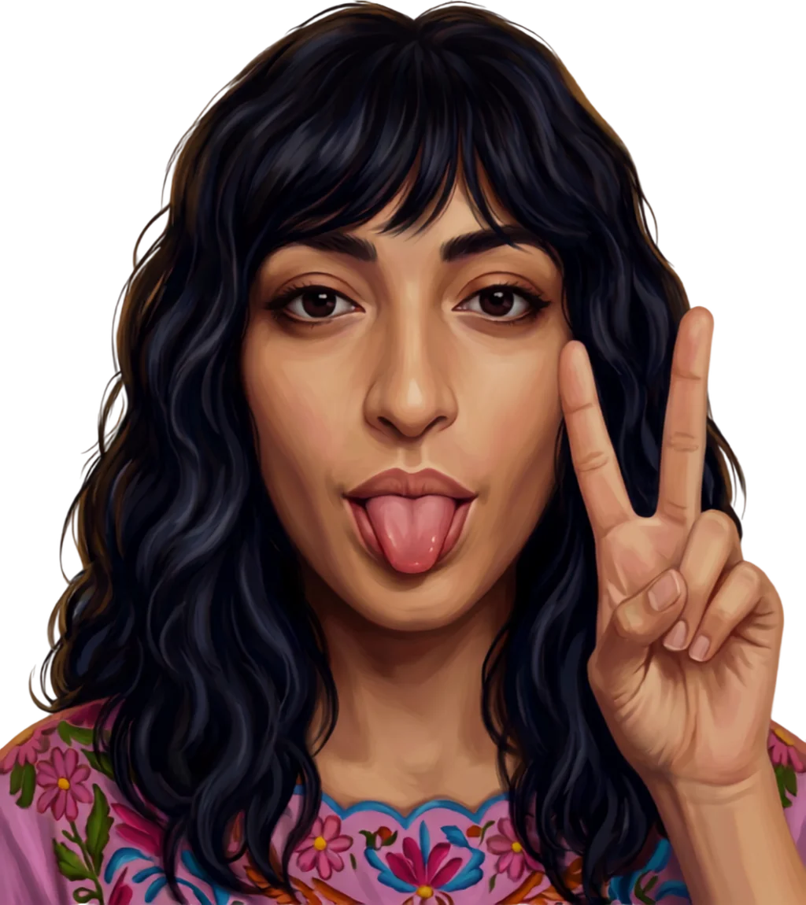

Atomic Finds ATX
Vintage, written
in the stars
handpicked under night skies
Curated rattan & bamboo treasures, restored in Austin — and sent your way from across the galaxy.
Every piece has a name, a past, and a place in your orbit.
Scroll